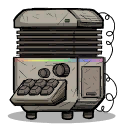
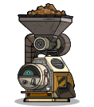
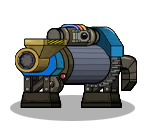
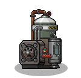
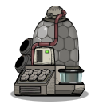
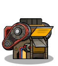
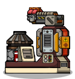
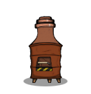
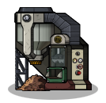

建筑¶
先进窑炉¶
适用于广泛的工业和化学领域应用。
一种先进的隔热式电窑，其热量通过金属的感应加热方式传递。
感应式窑炉的一个优点是，与大多数其他燃料加热方式相比，其加热过程更加清洁、节能且可控性更强。
信息¶
 |
|
|---|---|
| 尺寸: | 宽 3 x 高 3 |
| 耗电: | 800 W |
| 科技: | 熔炼 |
| 建造材料: | |
|---|---|
| 精炼金属 | 200 kg |
配方¶
| 材料: | 耗时: | 产物: |
|---|---|---|
| 煤炭 (500 kg) |
30s | 精炼碳 (500 kg) |
| 木材 (800 kg) |
30s | 精炼碳 (500 kg) |
| 泥炭 (1200 kg) |
30s | 精炼碳 (500 kg) |
| 粘土 (300 kg) 沙子 (200 kg) |
30s | 陶瓷 (500 kg) |
| 沙子 (270 kg) 固态粘性凝胶 (100 kg) 硼砂 (30 kg) |
30s | 玻璃纤维 (400 kg) |
| 沙子 (270 kg) 塑料 (100 kg) 硼砂 (30 kg) |
30s | 玻璃纤维 (400 kg) |
| 沙子 (270 kg) 生物塑料 (100 kg) 硼砂 (30 kg) |
30s | 玻璃纤维 (400 kg) |
| 沙子 (270 kg) 塑料质 (100 kg) 硼砂 (30 kg) |
30s | 玻璃纤维 (400 kg) |
| 沥青 (100 kg) 富勒烯 (25 kg) 异构树液 (15 kg) 人造纤维 (x10) |
30s | 复合碳纤维 (150 kg) |
| 油页岩 (500 kg) |
40s | 水泥 (350 kg) 原油 (25 kg) 低级金属砂 (50 kg) |
| 粘土 (300 kg) 沙子 (200 kg) |
30s | 砖料 (500 kg) |
先进金属精炼器¶
一座经过改进的精炼器，能够采用大规模熔炼工艺，并具备独家的金属生产能力。
一种从原始金属矿石中生产精炼金属的先进方法。
该方法能显著加热金属，并且只使用通过管道输送的超级冷却剂。
复制人不会制造物品，除非有相应的配方已在队列。
信息¶
 |
|
|---|---|
| 尺寸: | 宽 3 x 高 5 |
| 耗电: | 3000 W |
| 科技: | 超热锻造 |
| 建造材料: | |
|---|---|
| 钢 或 硬化合金 | 1000 kg |
| 陶瓷 | 600 kg |
建筑接口¶
| 输入: | 输出: |
|---|---|
| 超级冷却剂 输入管道 | 液体 输出管道 |
配方¶
| 材料: | 耗时: | 产物: |
|---|---|---|
| 铜矿 (400 kg) 精炼碳 (50 kg) 沙子 (50 kg) |
40s | 铜 (370 kg) 炉渣 (130 kg) |
| 钴矿 (400 kg) 精炼碳 (50 kg) 沙子 (50 kg) |
40s | 钴 (370 kg) 炉渣 (130 kg) |
| 黑钨矿 (400 kg) 精炼碳 (50 kg) 沙子 (50 kg) |
40s | 钨 (370 kg) 炉渣 (130 kg) |
| 辉银矿 (400 kg) 精炼碳 (50 kg) 沙子 (50 kg) |
40s | 银 (370 kg) 炉渣 (130 kg) |
| 铝矿 (400 kg) 精炼碳 (50 kg) 沙子 (50 kg) |
40s | 铝 (370 kg) 炉渣 (130 kg) |
| 金汞齐 (400 kg) 精炼碳 (50 kg) 沙子 (50 kg) |
40s | 金 (370 kg) 炉渣 (130 kg) |
| 锌矿 (400 kg) 精炼碳 (50 kg) 沙子 (50 kg) |
40s | 锌 (370 kg) 炉渣 (130 kg) |
| 镍矿 (400 kg) 精炼碳 (50 kg) 沙子 (50 kg) |
40s | 镍 (370 kg) 炉渣 (130 kg) |
| 导热质 (400 kg) 精炼碳 (50 kg) 沙子 (50 kg) |
40s | 铌 (370 kg) 炉渣 (130 kg) |
| 铁矿 (400 kg) 精炼碳 (50 kg) 沙子 (50 kg) |
40s | 铁 (370 kg) 炉渣 (130 kg) |
| 朱砂矿 (400 kg) 精炼碳 (50 kg) 沙子 (50 kg) |
40s | 汞 (370 kg) 炉渣 (130 kg) |
| 银金矿 (400 kg) 精炼碳 (50 kg) 沙子 (50 kg) |
40s | 金 (250 kg) 银 (120 kg) 炉渣 (130 kg) |
| 方铅矿 (400 kg) 精炼碳 (50 kg) 沙子 (50 kg) |
40s | 铅 (150 kg) 银 (200 kg) 炉渣 (150 kg) |
| 黄铁矿 (400 kg) 精炼碳 (50 kg) 沙子 (50 kg) |
40s | 铁 (300 kg) 炉渣 (200 kg) |
球磨机 (机械分离型)¶
一座大型的工业加工厂，利用钢球和特殊的振动分离装置来破碎原始矿石，并从中筛选出可能有用的资源。
将矿物原料粉碎成有用的材料和工业原料。
信息¶
 |
|
|---|---|
| 尺寸: | 宽 5 x 高 3 |
| 耗电: | 800 W |
| 科技: | 超热锻造 |
| 建造材料: | |
|---|---|
| 钢 或 硬化合金 | 1000 kg |
配方¶
| 材料: | 耗时: | 随机产物: |
|---|---|---|
| 砂岩 (500 kg) |
50s | 碎岩 沙子 铜矿 银金矿 辉银矿 肥料 |
| 沉积岩 (500 kg) |
50s | 碎岩 粘土 金汞齐 黄铁矿 钴矿 盐 绿片岩 锌矿 |
| 页岩 (500 kg) |
50s | 碎岩 粘土 金汞齐 黄铁矿 钴矿 盐 绿片岩 锌矿 |
| 火成岩 (500 kg) |
50s | 碎岩 沙子 黄铁矿 硫 铁矿 黑曜石 方铅矿 油页岩 |
| 花岗岩 (500 kg) |
50s | 碎岩 沙子 铝矿 铁矿 绿片岩 锌矿 黑曜石 |
| 镁铁质岩 (500 kg) |
50s | 碎岩 沙子 铝矿 银金矿 锌矿 精炼磷 |
| 深渊晶石 (500 kg) |
50s | 黑钨矿 钨 精炼磷 黑曜石 钻石 碎岩 沙子 |
基础原油精炼厂¶
一种基础的原油精炼厂，其热源来自燃烧的固体物质。
将原油通过煤炭作为热源转化为石油。
该精炼过程会产生天然气和二氧化碳
重要提示：气体输出端的管道是可选的。如果没有将气体管道连接到这些端口上，那么输出的气体将直接排放到环境中。
信息¶
 |
|
|---|---|
| 尺寸: | 宽 3 x 高 4 |
| 耗电: | 90 W |
| 科技: | 化石燃料 |
| 建造材料: | |
|---|---|
| 金属矿石 | 200 kg |
建筑接口¶
| 输入: | 输出: |
|---|---|
| 原油 输入管道 | 液体 输出管道 |
| - | 二氧化碳 输出管道 |
| - | 天然气 输出管道 |
元素转换¶
| 输入: | 输出: |
|---|---|
| 原油 (5 kg/秒) 可燃固体 (100 g/秒) |
石油 (2500 g/秒 于 98°C) 二氧化碳 (50 g/秒) 天然气 (90 g/秒 于 115°C) |
工业玻璃熔炉¶
等离子弧炉利用由电弧加热器（等离子体发生器）产生的低温等离子体流来工作。
这个技术先进的玻璃熔炉不仅能够将沙子熔化成熔融玻璃，还能用于众多其他领域。
信息¶
 |
|
|---|---|
| 尺寸: | 宽 3 x 高 3 |
| 耗电: | 2400 W |
| 科技: | 超热锻造 |
| 建造材料: | |
|---|---|
| 陶瓷 | 500 kg |
| 精炼金属 | 200 kg |
建筑接口¶
| 输入: | 输出: |
|---|---|
| - | 液体 输出管道 |
配方¶
| 材料: | 耗时: | 产物: |
|---|---|---|
| 沙子 (300 kg) |
30s | 熔融玻璃 (100 kg) |
| 碎冰 (500 kg) |
10s | 水 (500 kg) |
| 浓盐冰 (500 kg) |
10s | 浓盐水 (500 kg) |
| 雪 (500 kg) |
10s | 水 (500 kg) |
| 冰 (500 kg) |
10s | 水 (500 kg) |
| 紧压雪 (500 kg) |
10s | 水 (500 kg) |
| 污染冰 (500 kg) |
10s | 污染水 (500 kg) |
颚式破碎机¶
颚式破碎机利用强筋的咬合力来破碎石头及矿物原料。
将矿物原料粉碎成有用的材料和工业原料。
信息¶
 |
|
|---|---|
| 尺寸: | 宽 3 x 高 2 |
| 耗电: | 120 W |
| 科技: | 蛮力精炼 |
| 建造材料: | |
|---|---|
| 金属矿石 | 200 kg |
配方¶
| 材料: | 耗时: | 产物: |
|---|---|---|
| Egg Shell (5 kg) |
30s | 石灰 (5 kg) |
| Pokeshell Molt (1000 g) |
40s | 石灰 (10 kg) |
| Oakshell Molt (5 kg) |
30s | 木材 (500 kg) |
| 化石 (100 kg) |
40s | 石灰 (5 kg) 碎岩 (70 kg) 沥青 (25 kg) |
| 盐 (100 kg) |
40s | 硼砂 (5 kg) 沙子 (95 kg) Table Salt (50 g) |
| 磷酸盐结晶 (100 kg) |
40s | 精炼磷 (70 kg) 碎岩 (30 kg) |
| 碎岩 (100 kg) |
30s | 沙子 (100 kg) |
| 黑曜石 (100 kg) |
30s | 沙子 (100 kg) |
| 绿片岩 (100 kg) |
50s | 碎岩 (65 kg) 沙子 (20 kg) 漂白石 (500 g) 盐 (14.5 kg) |
| 页岩 (100 kg) |
40s | 碎岩 (100 kg) |
| 陶瓷 (100 kg) |
40s | 碎岩 (100 kg) |
| 黑曜石 (100 kg) |
40s | 碎岩 (100 kg) |
| 火成岩 (100 kg) |
40s | 碎岩 (100 kg) |
| 砖料 (100 kg) |
40s | 碎岩 (100 kg) |
| 花岗岩 (100 kg) |
40s | 碎岩 (100 kg) |
| 沉积岩 (100 kg) |
40s | 碎岩 (100 kg) |
| 砂岩 (100 kg) |
40s | 碎岩 (100 kg) |
| 镁铁质岩 (100 kg) |
40s | 碎岩 (100 kg) |
| 铜矿 (100 kg) |
40s | 铜 (50 kg) 沙子 (50 kg) |
| 钴矿 (100 kg) |
40s | 钴 (50 kg) 沙子 (50 kg) |
| 黑钨矿 (100 kg) |
40s | 钨 (50 kg) 沙子 (50 kg) |
| 辉银矿 (100 kg) |
40s | 银 (50 kg) 沙子 (50 kg) |
| 铝矿 (100 kg) |
40s | 铝 (50 kg) 沙子 (50 kg) |
| 金汞齐 (100 kg) |
40s | 金 (50 kg) 沙子 (50 kg) |
| 锌矿 (100 kg) |
40s | 锌 (50 kg) 沙子 (50 kg) |
| 镍矿 (100 kg) |
40s | 镍 (50 kg) 沙子 (50 kg) |
| 导热质 (100 kg) |
40s | 铌 (50 kg) 沙子 (50 kg) |
| 铁矿 (100 kg) |
40s | 铁 (50 kg) 沙子 (50 kg) |
| 朱砂矿 (100 kg) |
40s | 汞 (50 kg) 沙子 (50 kg) |
| 银金矿 (100 kg) |
40s | 金 (25 kg) 银 (15 kg) 沙子 (50 kg) |
| 方铅矿 (100 kg) |
40s | 银 (25 kg) 铅 (15 kg) 沙子 (50 kg) |
| 黄铁矿 (100 kg) |
40s | 铁 (30 kg) 沙子 (70 kg) |
| 炉渣 (100 kg) 碎岩 (20 kg) |
40s | 水泥 (80 kg) 中级金属砂 (12.5 kg) 高级金属砂 (7.5 kg) |
等离子熔炉¶
先进熔炼冶金炉，其利用由载气喷射产生的极高温度的热等离子体进行工作。高昂的能耗通过精炼过程的质量和产量得到了弥补。
采用先进技术精炼金属矿石及其他矿物原料。
在制造过程中产生大量的热量并消耗载气。
主要产物以熔融态直排至建筑下方地面，液态废料通过独立端口排出。
信息¶
 |
|
|---|---|
| 尺寸: | 宽 5 x 高 5 |
| 耗电: | 5000 W |
| 科技: | 催化剂 |
| 建造材料: | |
|---|---|
| 陶瓷 | 2000 kg |
| 钨 | 1000 kg |
建筑接口¶
| 输入: | 输出: |
|---|---|
| 载气 输入管道 | 玻璃 输出管道 |
| - | 玻璃 输出管道 |
元素转换¶
| 输入: | 输出: |
|---|---|
| 载气 (100 g/秒) |
二氧化碳 (25 g/秒 于 75°C) |
配方¶
| 材料: | 耗时: | 产物: |
|---|---|---|
| 沙子 (150 kg) 硼砂 (10 kg) |
10s | 熔融玻璃 (100 kg) 熔渣 (60 kg) |
| 铜矿 (500 kg) 沙子 (40 kg) |
10s | 熔融铜 (490 kg) 熔渣 (50 kg) |
| 钴矿 (500 kg) 沙子 (40 kg) |
10s | 熔融钴 (490 kg) 熔渣 (50 kg) |
| 黑钨矿 (500 kg) 沙子 (40 kg) |
10s | 熔融钨 (490 kg) 熔渣 (50 kg) |
| 辉银矿 (500 kg) 沙子 (40 kg) |
10s | 熔融银 (490 kg) 熔渣 (50 kg) |
| 铝矿 (500 kg) 沙子 (40 kg) |
10s | 熔融铝 (490 kg) 熔渣 (50 kg) |
| 金汞齐 (500 kg) 沙子 (40 kg) |
10s | 熔融金 (490 kg) 熔渣 (50 kg) |
| 锌矿 (500 kg) 沙子 (40 kg) |
10s | 熔融锌 (490 kg) 熔渣 (50 kg) |
| 镍矿 (500 kg) 沙子 (40 kg) |
10s | 熔融镍 (490 kg) 熔渣 (50 kg) |
| 导热质 (500 kg) 沙子 (40 kg) |
10s | 熔融铌 (490 kg) 熔渣 (50 kg) |
| 铁矿 (500 kg) 沙子 (40 kg) |
10s | 熔融铁 (490 kg) 熔渣 (50 kg) |
| 银金矿 (500 kg) 沙子 (40 kg) |
10s | 熔融金 (294 kg) 熔融银 (196 kg) 熔渣 (50 kg) |
| 方铅矿 (500 kg) 沙子 (40 kg) |
10s | 熔融银 (294 kg) 熔融铅 (196 kg) 熔渣 (50 kg) |
| 黄铁矿 (500 kg) 沙子 (40 kg) |
10s | 熔融铁 (400 kg) 熔渣 (140 kg) |
| 铁 (425 kg) 精炼碳 (50 kg) 石灰 (25 kg) |
10s | 熔融钢 (500 kg) |
| 深渊晶石 (500 kg) 石灰 (20 kg) |
20s | 熔融钨 (120 kg) 岩浆 (380 kg) |
木材热解窑¶
一种基本的窑炉，它通过热解过程将木料转化为可用的煤炭。
将木材热解为煤炭。
信息¶
 |
|
|---|---|
| 尺寸: | 宽 1 x 高 2 |
| 科技: | 蛮力精炼 |
| 建造材料: | |
|---|---|
| 金属矿石 | 200 kg |
元素转换¶
| 输入: | 输出: |
|---|---|
| 木材 (1000 g/秒) |
煤炭 (330 g/秒 于 39°C) 二氧化碳 (100 g/秒 于 97°C) |
土壤搅拌机¶
一种用于将多种固体材料均匀混合的设备，同时还会对这些材料进行化学处理。
一款专为农业用途设计的坚固型物料混合器，主要用于生产泥土和肥料。
信息¶
 |
|
|---|---|
| 尺寸: | 宽 4 x 高 4 |
| 耗电: | 480 W |
| 科技: | 农业 |
| 建造材料: | |
|---|---|
| 精炼金属 | 400 kg |
建筑接口¶
| 输入: | 输出: |
|---|---|
| 污染水 输入管道 | - |
| 水 输入管道 | - |
| 氨 输入管道 | - |
配方¶
| 材料: | 耗时: | 产物: |
|---|---|---|
| 硝酸盐结晶 (25 kg) 磷酸盐结晶 (25 kg) 硫 (25 kg) 污染水 (25 kg) |
80s | 肥料 (100 kg) |
| 氨 (25 kg) 磷酸盐结晶 (25 kg) 硫 (25 kg) 污染水 (25 kg) |
80s | 肥料 (100 kg) |
| 精炼磷 (50 kg) 碎岩 (40 kg) 水 (10 kg) |
60s | 磷酸盐结晶 (100 kg) |
| 磷酸盐结晶 (50 kg) 泥土 (40 kg) 水 (10 kg) |
60s | 磷矿 (100 kg) |
| 碎岩 (40 kg) 污染土 (20 kg) 煤炭 (20 kg) 水 (20 kg) |
60s | 泥土 (100 kg) |
| 碎岩 (40 kg) 污染土 (20 kg) 泥炭 (20 kg) 水 (20 kg) |
60s | 泥土 (100 kg) |
| 木材 (60 kg) 碎岩 (30 kg) 污染水 (10 kg) |
60s | 污染土 (100 kg) |
| 压缩生物质 (40 kg) 碎岩 (50 kg) 水 (10 kg) |
60s | 泥土 (100 kg) |